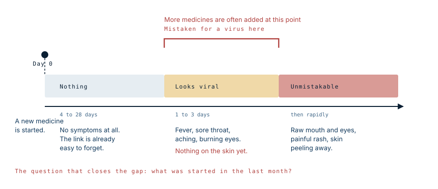

It looked like a virus. It was his migraine medication.
Published
He was treated for a viral infection. The medicines did nothing and he got worse. His eyes turned bloodshot, his lips cracked and began to peel, and only then did anyone name it. He was taking lamotrigine — a drug that carries a boxed warning for exactly this.
What is actually happening
The immune system misidentifies a drug, or a chemical the body has made from it, as a threat, and attacks the cells carrying it. Those cells are keratinocytes — the cells of the epidermis, the outer layer of skin, and of the mucous membranes lining the mouth, eyes and genitals.
Killing them separates the epidermis from the layer beneath. The skin loses its attachment and comes away in sheets, leaving raw dermis exposed. Physiologically this is a burn: the same fluid loss, the same temperature dysregulation, the same open door for infection. That is why these patients are managed in burns units, and it is why the mortality is what it is — around one in ten for SJS, and higher once more of the body is involved.
There is no drug that reverses it. Everything else is support while the body regrows its own covering.
Why it looks like a virus first
Here is the trap, and it is worth understanding precisely, because it is where the outcome is decided.
SJS does not begin on the skin. It begins with fever, sore throat, aching, malaise, and a stinging or burning sensation in the eyes — one to three days before any rash. Every one of those is what a viral illness feels like. Nothing on the skin points anywhere.

Twelve days
He had been taking lamotrigine for twelve days when the first symptoms appeared. His mother's account of her own reasoning is the most instructive line in the whole case: she assumed that if the drug were causing a reaction, it would have happened the first night he took it.
That is what almost anyone would think, and it is what makes this reaction different from the drug allergy people are familiar with. Anaphylaxis happens within minutes and announces itself. SJS is a delayed, cell-mediated reaction that takes days to weeks to build, and lamotrigine specifically tends to declare itself somewhere in the first eight weeks. Twelve days sits squarely in that window.
The consequence was that nobody, including the family and the first emergency department, connected the illness to a medicine that had been part of the household routine for nearly a fortnight. He was given a further dose on the way to hospital.
There is no fault in that. The drug had been prescribed, it had been tolerated for days, and the presenting picture was fever and a rash. The point is that the connection is invisible unless someone deliberately asks for it, which is why the question about recent medicines has to be asked rather than waited for.
The eye came first
Before the rash, he complained of the feeling of something in his eye, and of a patch on his foot that was taken for poison oak.
In hindsight both were the beginning. Ocular irritation without an obvious cause is one of the earliest signs of SJS, and it precedes the skin because the conjunctiva is mucosa, and mucosa goes first. An isolated skin lesion at the same time is easy to attribute to whatever a child was doing outdoors.
Neither of those, alone, would justify suspecting a drug reaction. Together, in a child on a new medicine, they read differently.
Two things then compound it. The latency means the drug was started long enough ago that nobody connects it — this is not anaphylaxis, which happens in minutes and is obvious. And treating the presumed infection often means prescribing more medicines, which at best does nothing and at worst adds another trigger to a system already reacting.
This failure is not new. When Stevens and Johnson first described the syndrome in 1922, both of the children in their report had already been misdiagnosed by their own physicians. A century later, the same pattern brought this patient to the point of peeling skin before anyone named it.
The sign that separates it from a virus
One feature does the work: mucous membranes.
Ordinary viral rashes do not strip the lining of the mouth and the surface of the eyes. SJS characteristically involves at least two mucosal sites — mouth and lips, eyes, genitals — and does so painfully, with erosions rather than simple redness. Lips that crack, bleed and crust over, and eyes that are raw rather than merely pink, are not features of a routine viral illness.
The other clue is that the skin hurts. Pain out of proportion to how the rash looks, particularly early, is characteristic, and it is often described before there is much to see.
Why lamotrigine, and why the schedule matters
Lamotrigine is an effective and widely used drug, and it carries a boxed warning — the strongest warning a medicine can have — for life-threatening rashes including Stevens-Johnson syndrome and toxic epidermal necrolysis. Serious rash occurred in roughly 0.3% of adults in the original epilepsy trials, and in around 0.8% of children, with one rash-related death in a paediatric cohort of just under two thousand. Children carry approximately three times the adult risk.
What makes this drug different from most others on the culprit list is that a large part of the risk is under someone's control.
The manufacturer's own labelling states that the risk of serious rash is increased by exceeding the recommended starting dose and by exceeding the recommended rate of dose escalation. This is why lamotrigine is dispensed in starter packs with the doses laid out week by week, beginning at a small dose and climbing slowly over several weeks. That schedule is not a formality or a way of easing side effects. It is the safety measure.
Two other factors raise the risk substantially. Taking valproate alongside lamotrigine roughly doubled the rate of serious rash in paediatric trials, because valproate slows the breakdown of lamotrigine and effectively raises the dose. And in people of Han Chinese and Thai ancestry, carrying the HLA-B*15:02 tissue type raises the risk of SJS and TEN by around two to three times.
Most serious reactions appear within the first eight weeks. Beyond that window the risk falls sharply.
The indication is part of the picture
Lamotrigine is approved for epilepsy and for bipolar disorder. Using it for migraine prevention is off-label, which is legal and sometimes reasonable — doctors prescribe off-label routinely and often for good reasons.
But it changes the arithmetic. A small risk of a devastating reaction is one thing when the alternative is uncontrolled seizures. It is weighed differently when the target is migraine, for which several drugs without a boxed warning exist. That calculation belongs to the patient and the prescriber together, and it is hard to make if the patient was never told the warning existed.
Other drugs on the list
Lamotrigine is not alone. Antibiotics account for the largest overall share, with sulfonamides and penicillins prominent. Then come analgesics and NSAIDs, cough and cold preparations, other anticonvulsants such as carbamazepine and phenytoin, and the gout drug allopurinol. Infections can trigger it too, particularly Mycoplasma in children.
What happened to him
The first emergency department treated a viral infection and sent him home with medicines. He got worse by the hour. The rash spread until it covered him, his eyes were bloodshot, and his lips cracked and began to peel. At a second hospital a nurse practitioner was the first person to say the words Stevens-Johnson syndrome.
He was admitted to a children's hospital, where he continued to deteriorate for four days before a dermatologist performed a skin biopsy and confirmed it. By then it had crossed from SJS into toxic epidermal necrolysis — the dividing line is 30% of the body surface, and he would reach around 90%. Asked whether he would be all right, the dermatologist said she did not know.
He was airlifted to a burns unit experienced in these cases, a flight of about two and a half hours during which his skin was blistering and coming away. There he was placed in a medically induced coma and ventilated. The dead skin was surgically removed and he was dressed head to toe in Biobrane, a temporary synthetic skin substitute that seals the raw surface, controls fluid loss and pain, and stays in place while the body regrows its own epidermis underneath. He also developed a lung infection.
A month later he was awake and healing. His skin regrew, and by his family's account he has had no lasting complications.
Why the transfers mattered
He passed through three hospitals in five days, and that is not a failure of the system so much as the system working, slowly.
TEN is uncommon enough that most hospitals see very few cases, and the expertise for managing it sits in burns units, because the problem is a burn in everything but origin: the same fluid and protein loss through raw dermis, the same collapse of temperature control, the same open surface for infection. Survival in TEN is closely tied to getting to that kind of unit early. Every day of delay counts.
What it costs afterwards
Skin usually regrows. Eyes often do not recover fully, and this is the part that gets least attention in the acute phase, when everyone is reasonably focused on keeping the patient alive.
It is worth being clear that walking away from 90% skin loss without lasting problems is fortunate rather than typical. His mother says so herself, describing other survivors she has met who continue to struggle years afterwards. Many are left with chronic dry eye, scarring inside the eyelids, light sensitivity, damaged nails and hair, patchy pigmentation, and in some cases significant visual loss.
Scarring of the conjunctiva can leave chronic dryness, adhesions between eyelid and eyeball, corneal damage and permanent visual loss. Early involvement of an ophthalmologist, while the patient is still critically ill and the eyes seem like the smallest problem, materially changes what vision the person has years later.
If you take lamotrigine
Do not stop it on your own. Stopping an anticonvulsant abruptly carries its own serious risks, including seizures in people taking it for epilepsy, and the overwhelming majority of people on this drug will never have a problem with it.
What matters is what you do about a rash. The labelling is unusually direct on this point: the drug should be discontinued at the first sign of rash unless the rash is clearly unrelated. So a rash while taking lamotrigine, particularly in the first two months, is a same-day call to your prescriber rather than a wait-and-see. If it comes with fever, a sore mouth or sore eyes, that is an emergency department visit.
And if you are being started on it, follow the titration pack exactly. Do not double up a missed dose to catch up, and tell the prescriber if you are also taking valproate.
Keeping this in proportion
SJS and TEN are rare. Millions of people take lamotrigine, ibuprofen and antibiotics safely, and most rashes that appear after starting a medicine are ordinary drug rashes that settle without consequence. Nothing here is a reason to refuse a prescribed medication.
What is worth carrying is one narrow pattern: a new medicine in the last month or two, then fever and a rash that hurts, with a raw mouth or raw eyes. That combination is urgent, and saying the name of the drug out loud to whoever assesses you is usually the fastest route to the right answer.
What this case teaches
Twelve days is the whole lesson. The reaction people expect from a medicine is immediate, so a drug tolerated for a week and a half stops being a suspect — which is precisely when this one declares itself. The early signs were a sore eye and a single skin patch, neither of which points anywhere on its own. And with lamotrigine specifically, a meaningful share of the risk sits in the starting dose and the speed of escalation, which is why the titration schedule exists. The question that shortens all of this is the one about what was started in the last few weeks, and it has to be asked rather than waited for.